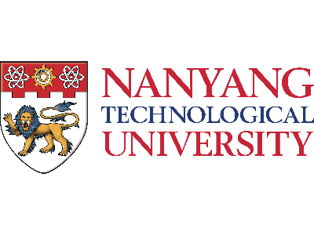
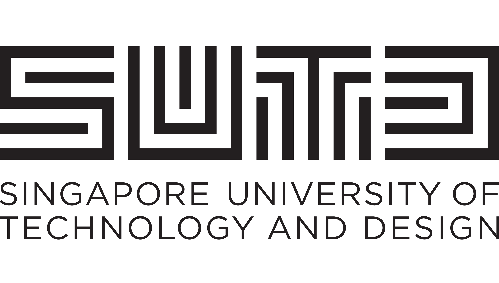
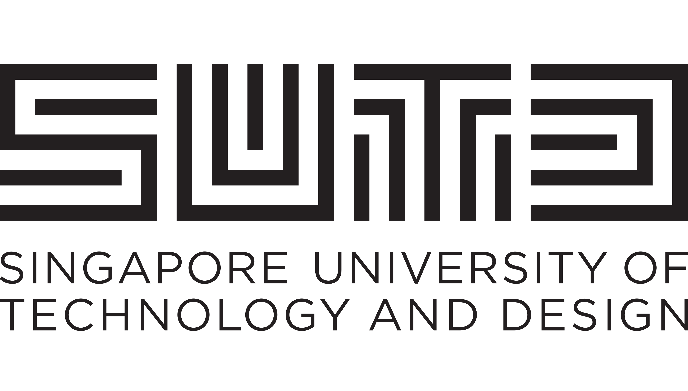

Keynote Speakers
The following speakers are invited to give keynotes at SSNLP 2023. Please click the profile image to view the detailed content of the talk.
Speaker: Preslav Nakov
Abstract: TBD
Bio: Dr. Preslav Nakov currently is the Department Chair of Natural Language Processing, and Professor of Natural Language Processing at MBZUAI. Prior to joining MBZUAI, Nakov worked at the Qatar Computing Research, HBKU where he was a principal scientist. Previously, he was a research fellow at the National University of Singapore (2008–2011) and a researcher at the Bulgarian Academy of Sciences (2008). He has been an honorary lecturer at Sofia University, Bulgaria since 2014. He’s served on the program committees of the major conferences in computational linguistics and artificial intelligence. Most recently, he was a program committee chair of the annual conference of the Association for Computational Linguistics (ACL 2022). Nakov is president of ACL SIGLEX, the Special Interest Group (SIG) on the Lexicon of the Association for Computational Linguistics (ACL). He is also secretary of SIGSLAV, the ACL SIG on Slavic Natural Language Processing. He also serves on the advisory board of the European Chapter of ACL, and he is a secretary of the Truth and Trust Online TTO) board of trustees. He is an Action Editor for the Computational Linguistics (CL) journal and for the Transactions of the Association for Computational Linguistics (TACL) journal, an Associate Editor for Transactions on Audio, Speech and Language Processing (TASLP) journal, for the IEEE Trans. on Affective Computing journal (TAFFC), for the Frontiers in Artificial Intelligence journal (sections: 1. Language and Computation; 2. Natural Language Processing), and for the AI Communications (AIC) journal, a Member of the Editorial Board of Computer Speech and Language (CSL) and of the Journal of Natural Language Engineering (NLE), and an Editorial Board member of the Language Science Press Book Series on Phraseology and Multiword Expressions.
Speaker: Farah Benamara
Abstract: TBD
Bio: Dr. Farah Benamara is an associate professor at Paul Sabatier University since Septembre 2005. She is working at the Artificial Intelligence Department of the IRIT laboratory. She is member of the MELODI (MEthodes et ingénierie des Langues, des Ontologies et du DIscours), a research group experts in NLP, Ontologies and Semantic Web technologies. In December 2016, she got her Habilitation à Diriger les Recherches (HDR) on the role of context in computer understanding. Since 2020, she is co-head of the MELODI group.
Speaker: Vivian Chen
Abstract: TBD
Bio: Dr. Vivian Chen is an associate professor at National Taiwan University. She earned a Ph.D. degree in the Language Technologies Institute (LTI) of School of Computer Science (SCS) at Carnegie Mellon University (CMU) in 2015. Chen also holds an M.S. degree in Language Technologies from CMU SCS, and B.S. and M.S. degrees in Computer Science & Information Engineering (CSIE) from National Taiwan University (NTU). Chen's research interests mainly focus on spoken language understanding, machine intelligence, spoken dialogue system, multimodal application, natural language processing, and deep learning. She fortunately received Google Faculty Research Award, AWS Machine Learning Research Awards, Best Student Paper Awards at IEEE ASRU 2013 and IEEE SLT 2010, a Best Student Paper Shortlist at ISCA INTERSPEECH 2012, and the Distinguished Master Thesis Award from ACLCLP.
Speaker: Tanya Goyal
Abstract: TBD
Bio: Dr. Tanya Goyal will start as an Assistant Professor at Cornell CS in July 2024. She will spend a year at the Center for Language and Intelligence at Princeton before that. She successfully defended her PhD in June 2023 at the Computer Science department at UT Austin, advised by Greg Durrett. She was part of the TAUR lab and the wider UT NLP group. Her PhD research focused on building evaluation tools for text generation models, focusing on aspects like factuality and coherence. Before grad school, she worked at the Adobe Research Lab in Bangalore, India.

Speaker: Diyi Yang
Abstract: TBD
Bio: Dr. Diyi Yang is an Assistant Professor in Computer Science at Stanford University. Professor Yang's research interests are Computational Social Science and Natural Language Processing. Her research goal is to understand the social aspects of language and then build socially aware NLP systems to better support human-human and human-computer interaction. Professor Yang received her PhD from the School of Computer Science, Carnegie Mellon University, and her bachelor's degree from Shanghai Jiao Tong University, China. Her work has received multiple best paper nominations or awards at ICWSM, EMNLP, SIGCHI, ACL, and CSCW. She is a recipient of Forbes 30 under 30 in Science, IEEE “AI 10 to Watch”, the Intel Rising Star Faculty Award, Microsoft Research Faculty Fellowship, and NSF CAREER Award.
Speaker: Joao Sedoc
Abstract: TBD
Bio: Dr. João Sedoc joined New York University Stern School of Business as an Assistant Professor of Technology, Operations and Statistics in September 2020. Professor Sedoc's research areas are at the intersection of machine learning and natural language processing. His interests include conversational agents, hierarchical models, deep learning, spectral clustering, spectral estimation of hidden Markov models, and time series analysis.Before joining NYU Stern, Professor Sedoc worked as an Assistant Research Professor in the Department of Computer Science at Johns Hopkins University. He has also worked in quantitative finance having started Chivalric Trading, been a portfolio manager at Millennium Management and worked as a researcher at BNP Paribas / Cooper Neff. Professor Sedoc received his BS in Mathematics, BSE in Computer Science Engineering and PhD in Computer and Information Science from the University of Pennsylvania.
Speaker: Daniel Preotiuc
Abstract: TBD
Bio: Dr. Daniel Preoțiuc-Pietro is a senior research scientist in the AI Group at Bloomberg, New York City, where he is the team lead of the core NLP team that builds libraries and tools what power NLP products. His research interests are in the areas of Natural Language Processing and Computational Social Science and are focused on understanding the social and temporal aspects of text, especially from social media, with applications in domains such as Psychology, Law, Political Science and Journalism. This research was featured extensively in popular press. He is a co-organizer of the Natural Legal Language Processing (NLLP) workshop series. Prior to joining Bloomberg, he was a postdoctoral research fellow at the University of Pennsylvania and worked on the World Well-Being Project in the Positive Psychology Center. Daniel completed his PhD studies on temporal models for social media as part of the Natural Language Processing Research Group at the University of Sheffield. During his time in Sheffield, he was also a part-time research associate for the TrendMiner EU FP7 project where he worked on predicting real world outcomes such as political voting intention and uncovering spatio-temporal patterns in large user-generated content.
Speaker: Huda Khayrallah
Abstract: TBD
Bio: Dr. Huda Khayrallah is a senior researcher at Microsoft, working on the Microsoft Translator team. Previously, she was a PhD student in Computer Science at The Johns Hopkins University (JHU), advised by Philipp Koehn. she was part of the Center for Language and Speech Processing (CLSP) and the machine translation group. In Summer 2019, she was a research intern at Lilt, working on translator-in-the-loop machine translation. She graduated from UC Berkeley with a B.A. in Computer Science in May 2015.


{kind=link}
{kind=link}
Speaker: Alessandro Moschitti
Abstract: TBD
Bio: Dr. Alessandro Moschitti is a principal scientist in the Alexa AI organization. Alessandro Moschitti was a professor of the CS Department of the University of Trento, Italy. He was currently a Principal Research Scientist of the Qatar Computing Research Institute (QCRI), within the Hamad Bin Khalifa University. He obtained his PhD in CS from the University of Rome in 2003. He has worked as (i) an research fellow for the University of Texas at Dallas, (ii) as a visiting professor for the University of Columbia (NY), Colorado and John Hopkins and (iii) as visiting researcher at the IBM Watson Research center (participating at the Jeopardy! Challenge) and at MIT-CSAIL. His expertise concerns theoretical and applied machine learning (ML) in the areas of Natural Language Processing (NLP), Information Retrieval (IR) and Data Mining. He has devised innovative structural kernels and neural networks for advanced syntactic/semantic processing, documented by more than 260 scientific articles published in NLP, IR and ML communities. He has been the General Chair of EMNLP 2014, a PC co-chair of CoNLL 2015, an action editor of TACL, and on the editorial board of MLJ, JAIR and JNLE. He has received four IBM Faculty awards, one Google Faculty award, five best paper awards and the best researcher award from Trento University. He has lead many projects, currently is the PI (QCRI side) of a large collaboration project between MIT CSAIL and QCRI.
Speaker: Lidong Bing
Abstract: TBD
Bio: Dr. Lidong Bing is a research director at Alibaba DAMO Academy, Singapore Office, where he is leading the multilingual NLP team of the Language Technology Lab. The team is working on a variety of NLP research and development projects that are tightly aligned with the globalization of Alibaba in the Southeast Asia region. He received a PhD degree from The Chinese University of Hong Kong and was a postdoc research fellow at Carnegie Mellon University. His research interests include various low-resource and multilingual NLP problems, large language models and their applications, etc. Currently, he is serving as an Action Editor for Transactions of the Association for Computational Linguistics (TACL) and ACL Rolling Review (ARR), as well as Area Chairs for AI conferences and Associate Editors for AI journals.
Organizers
 


| General Chair: |
Kokil Jaidka, National University of Singapore |
| PC Chair: |
Wei Gao, Singapore Management University |
| Organizing Committee: |
Yanxia Qin, National University of Singapore Hao Fei, National University of Singapore Yang Deng, National University of Singapore Sun Shuo, Institute for Infocomm Research Suzanna Sia, Johns Hopkins University Gerard Yeo, National University of Singapore |
| Co-organizers: |
Min-Yen Kan, National University of Singapore Hwee Tou Ng, National University of Singapore Tat-Seng Chua, National University of Singapore Shafiq Joty, Nanyang Technological University Nancy Chen, Institute for Infocomm Research Jian Su, Institute for Infocomm Research Jing Jiang, Singapore Management University Wei Lu, Singapore University of Technology and Design Soujanya Poria, Singapore University of Technology and Design |
Partners (TBD)
Location
SSNLP 2023 will be held at the Shaw Foundation Alumni House Auditorium, NUS (11 Kent Ridge Dr, Singapore 119244).
Past SSNLP
- · SSNLP 2022. Held at NUS.
- · SSNLP 2020. Held 100% virtually.
- · SSNLP 2019. Held at I2R.
- · SSNLP 2018. Inaugural event at SUTD.